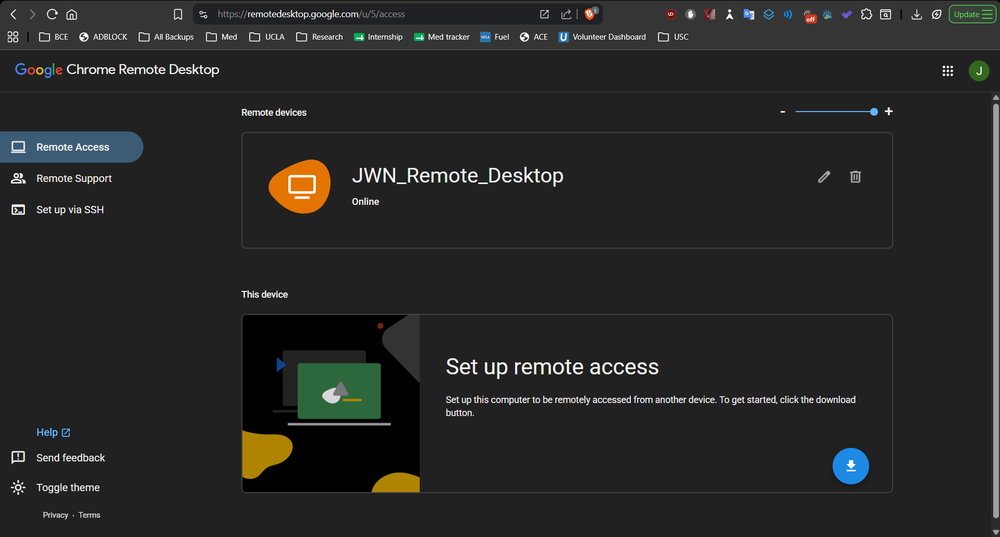
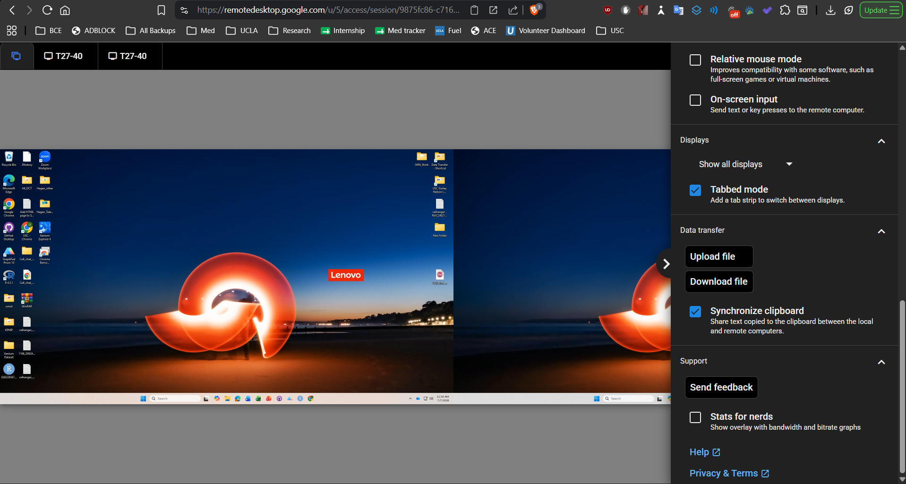

Internal use only
This tutorial is for JWN lab members only. Don’t
share this guide, the lab remote access account, the PIN, the desktop
login information, screenshots, or any access instructions outside the
lab.
All login information is also written on the paper next to the lab
desktop. If anything in this guide differs from the paper in the lab,
use the information on the paper and notify the lab so this guide can be
updated.
What this remote desktop is for
The JWN lab desktop is available for remote use when lab members need
access to the desktop’s computing environment, files, software, or
analysis setup.
Use the lab Google Calendar as the sign-up system to reserve time on
the remote desktop.
Important warning
When you remotely access the desktop, anything you do can be
seen on the physical monitors in the lab by anyone who is
present.
Before using the desktop remotely:
- Don’t open private or sensitive personal files.
- Try to not log in to personal accounts unless absolutely
necessary.
- Close sensitive files before ending your session.
- Sign out of any personal accounts before leaving.
- Save your work before disconnecting.
Before you start
1. Reserve your session on Google Calendar
Before using the remote desktop:
- Open the lab Google Calendar.
- Check whether someone else has already reserved the remote
desktop.
- Create a calendar event for your intended session.
- Title the event clearly, for example:
Remote Desktop: Your Name
- Include your expected start and end time.
- Don’t overlap with another user’s reserved time unless you have
asked them if you could.
2. Make sure the desktop is turned on
The lab desktop must be turned on to be accessed
remotely.
If Chrome Remote Desktop does not connect after about 30
seconds, the desktop is probably off, asleep, disconnected, or
not available.
If the desktop is not on:
- Check the lab Google Calendar to see who is physically in the lab
that day.
- Message someone in lab and ask them to turn on the desktop.
- After they confirm it is on, try connecting again.
Step-by-step instructions
Step 1: Go to Chrome Remote Desktop
On the device you want to remotely access from, open Chrome and go to
the Remote
Desktop
Log in using the lab remote access Google account information.
Step 2: Select the lab desktop
Under Remote devices, click the lab desktop
device.
The device can be accessed by clicking on
JWN_Remote_Desktop .
If prompted for the PIN, enter it.

Screenshot 1. Chrome Remote Desktop access page
showing the lab remote desktop device.
If it takes more than about 30 seconds and does not
connect, the desktop is likely not turned on. Check the lab calendar,
identify who is in lab, and ask someone to turn it on.
Step 3: Log in to the Windows desktop
After Chrome Remote Desktop connects, log in to the lab desktop using
the password.
Once logged in, remember that the physical monitors in the lab will
show your remote session to anyone in the lab walking by.
Display settings during remote access
After logging in, you can change which desktop monitor you want to
view.
On the right side of Chrome Remote Desktop, open the display settings
panel. You can select which monitor to view or switch between
displays.
You can also switch displays using the strip at the top of the remote
session window.

Screenshot 2. Chrome Remote Desktop session with
display settings and display-switching strip.
During your session
While using the remote desktop:
- Avoid moving or deleting other people’s files.
- Avoid logging into personal accounts unless necessary.
- Remember that anything displayed is visible on the physical monitors
in the lab.
- If you are running long analyses, label your files clearly and
communicate in Slack if the desktop will be occupied.
Ending your session
Before disconnecting:
- Save your work.
- Close sensitive files.
- Sign out of any personal accounts.
- Close unnecessary programs.
- Leave any long-running analysis clearly labeled.
- Put the desktop to sleep remotely.
- Disconnect from Chrome Remote Desktop from your device you’re
accessing from.
Troubleshooting
The desktop does not appear online
Possible causes:
- The desktop is turned off.
- The desktop is asleep.
- The internet connection is down.
- Chrome Remote Desktop is not running properly.
What to do:
- Check the lab Google Calendar.
- Find who is physically in lab that day.
- Ask them to turn the computer on or check whether it is awake.
- Try reconnecting.
The PIN does not work
- Check the paper next to the desktop for the current PIN.
- Make sure you are using the lab remote desktop card, not another
device.
- If the PIN was changed, notify the lab so this guide can be
updated.
You cannot log in to Windows
- Check the username and password on the paper next to the
desktop.
- Confirm that Caps Lock is not on.
- Ask someone physically in lab to check the screen.
You only see one monitor or the wrong monitor
- Open the Chrome Remote Desktop side panel.
- Go to Displays.
- Select the monitor you want to view.
- You can also use the display strip at the top of the remote session
window.
Maintenance notes
Update this guide if any of the following change:
- Remote desktop device name
- Chrome Remote Desktop account
- PIN
- Windows username or password
- Google Calendar scheduling rules
- File storage rules
- Lab policy on remote desktop use
Last revised on July 10th, 2026 by Kevin Shih